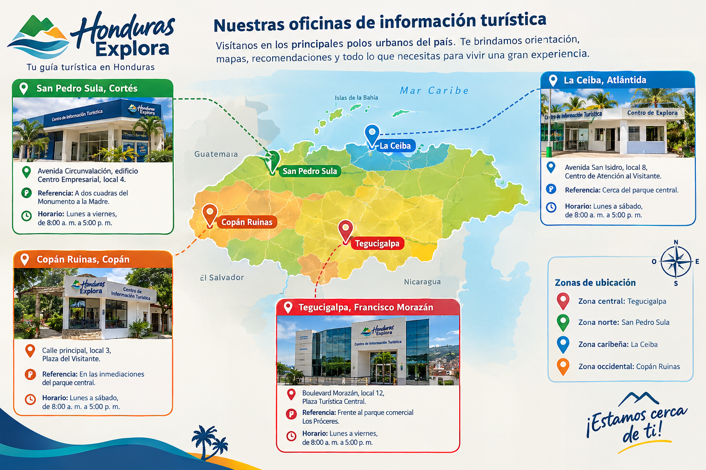

¿Cómo podemos ayudarte?
En Honduras Explora trabajamos para que cada visitante disfrute de una experiencia segura, organizada y enriquecedora. Nuestro equipo brinda orientación sobre destinos turísticos, rutas de acceso, actividades culturales, hospedaje y servicios disponibles en las diferentes regiones del país.
Puedes comunicarte con nuestras oficinas, consultar nuestros canales digitales o completar el formulario de atención para resolver dudas, compartir comentarios o solicitar asistencia.
Oficinas de información turística
Contamos con puntos de atención en los principales centros urbanos del país, donde los viajeros pueden recibir información sobre destinos, transporte, actividades recreativas y recomendaciones para planificar sus recorridos.
Dirección: Boulevard Morazán, local 12, Plaza Turística Central. Referencia: Frente al parque comercial Los Próceres. Horario: Lunes a viernes, de 8:00 a. m. a 5:00 p. m.
Dirección: Avenida Circunvalación, edificio Centro Empresarial, local 4. Referencia: A dos cuadras del Monumento a la Madre. Horario: Lunes a viernes, de 8:00 a. m. a 5:00 p. m.
Dirección: Avenida San Isidro, local 8, Centro de Atención al Visitante. Referencia: Cerca del parque central. Horario: Lunes a sábado, de 8:00 a. m. a 5:00 p. m.
Dirección: Calle principal, local 3, Plaza del Visitante. Referencia: En las inmediaciones del parque central. Horario: Lunes a sábado, de 8:00 a. m. a 5:00 p. m.
Mapa esquemático y puntos de referencia

Teléfonos de emergencia turística y asistencia vial
La seguridad de nuestros visitantes es una prioridad. Por ello, recomendamos mantener disponibles los contactos de emergencia y solicitar ayuda a las autoridades correspondientes ante accidentes, problemas médicos o situaciones de riesgo.
Teléfono: 911.
En Honduras, el Sistema Nacional de Emergencias 911 atiende situaciones que requieren intervención urgente, como accidentes, emergencias médicas, incendios y hechos que comprometan la seguridad de las personas.
Línea de asistencia de Conoce Tu Tierra: +504 9999-1234
Este canal de ejemplo estaría destinado a recibir solicitudes de orientación ante desperfectos mecánicos, dificultades durante los recorridos o necesidad de localizar servicios de apoyo vial. La atención dependería de la disponibilidad del equipo y de los proveedores asociados.
Teléfono: +504 2222-1234
Mediante esta línea, los visitantes pueden solicitar información sobre destinos, horarios de atención, rutas recomendadas y servicios turísticos disponibles.
Correo electrónico oficial
Correo de atención: info@conocetutierra.example
Canales digitales institucionales
Conoce Tu Tierra pone a disposición de los visitantes diferentes canales digitales para facilitar el acceso a información turística y mantener una comunicación directa con el público.
A través de estas plataformas, los usuarios podrán descubrir destinos turísticos de Honduras, consultar recomendaciones de viaje, conocer eventos culturales y mantenerse informados sobre actividades y servicios turísticos.